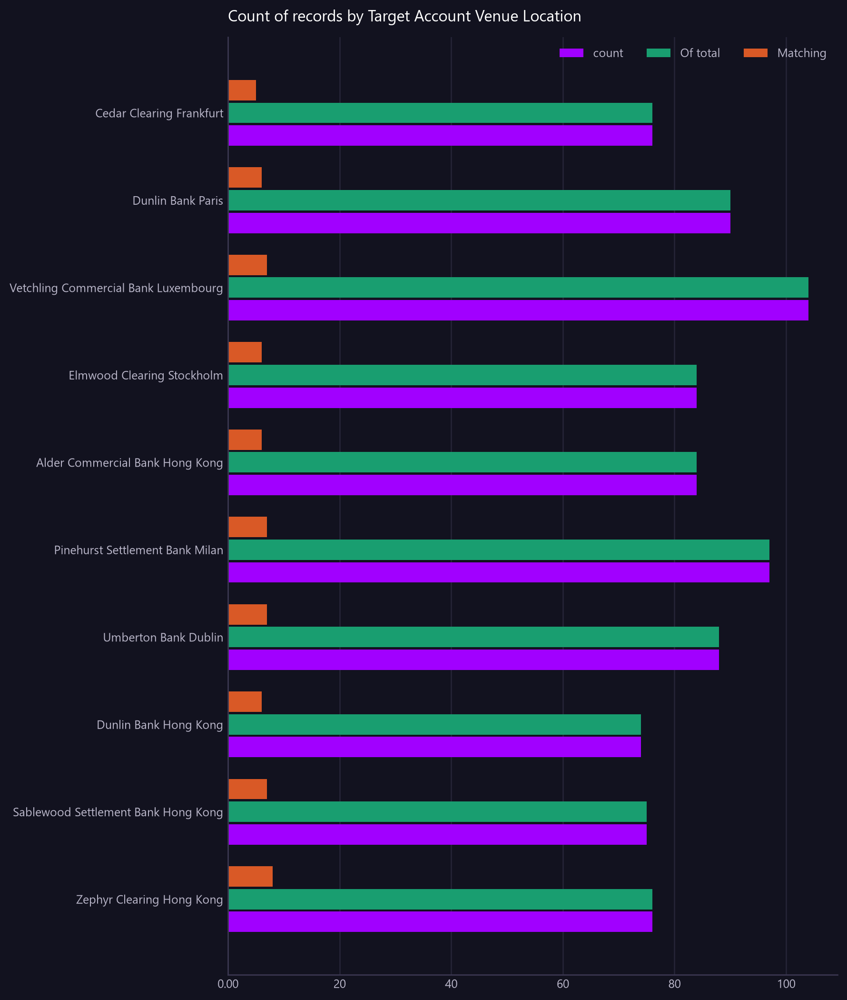

Count of records by Target Account Venue Location
Failure and rejection rate by venue, as a proportion of what we send them. A rate, not a count - three failures in five beats ten in a thousand.
Asked as Which venues have the highest rate of failed or rejected transfers, relative to the total volume we send them?

Failure rate % is a percentage and cannot share an axis with the amounts, so it is in the table only.
Commentary
The report identifies Zephyr Clearing in Hong Kong as having the highest failure rate of transfers, with a rate of 10.50% relative to the total volume of 76 transfers sent to them. Sablewood Settlement Bank, also in Hong Kong, follows with a failure rate of 9.30% out of 75 transfers. Notably, Hong Kong venues appear prominently in the top three positions for failure rates, indicating a potential area for further investigation. Operations should particularly focus on the processes involving Zephyr Clearing and Sablewood Settlement Bank to understand the reasons behind these higher failure rates.
| Target Account Venue Location | count | Failure rate % | Matching | Of total |
|---|---|---|---|---|
| Zephyr Clearing Hong Kong | 76.00 | 10.50 | 8.00 | 76.00 |
| Sablewood Settlement Bank Hong Kong | 75.00 | 9.30 | 7.00 | 75.00 |
| Dunlin Bank Hong Kong | 74.00 | 8.10 | 6.00 | 74.00 |
| Umberton Bank Dublin | 88.00 | 8.00 | 7.00 | 88.00 |
| Pinehurst Settlement Bank Milan | 97.00 | 7.20 | 7.00 | 97.00 |
| Alder Commercial Bank Hong Kong | 84.00 | 7.10 | 6.00 | 84.00 |
| Elmwood Clearing Stockholm | 84.00 | 7.10 | 6.00 | 84.00 |
| Vetchling Commercial Bank Luxembourg | 104.00 | 6.70 | 7.00 | 104.00 |
| Dunlin Bank Paris | 90.00 | 6.70 | 6.00 | 90.00 |
| Cedar Clearing Frankfurt | 76.00 | 6.60 | 5.00 | 76.00 |
Limitations of this view
- The amounts are in different currencies and are therefore not directly comparable or summable.
- The view is scoped to the value date range from 2026-07-20 to 2026-08-18.
- Display currency is GBP, but the 'Value Amount' is in the transfer's own currency.
Dependencies
- The calculation of failure rate depends on the 'Transfer Status' and 'Message Status' fields.
Downloads
{kind=link}
The Markdown documents everything considered, so a reader can hand it to an AI and ask follow-up questions about this view.
How this was produced
{
"view": "nostro_transfer",
"sheet": "Nostro Transfer View",
"source_file": "synthetic_liquidity_month.xlsx",
"mode": "aggregate",
"filters": [],
"group_by": [
"Target Account Venue Location"
],
"time_bucket": null,
"measures": [
"count of rows"
],
"columns": [],
"sort_by": "Failure rate %",
"limit": 10,
"join": null,
"derived": [],
"currency_corrections": [],
"data_as_of": "2026-08-19T01:21:56",
"measure": "",
"aggregation": "count",
"rows_in_view": 4781,
"rows_after_filters": 4781,
"rows_returned": 10,
"executed_at": "2026-08-20T11:29:29"
}